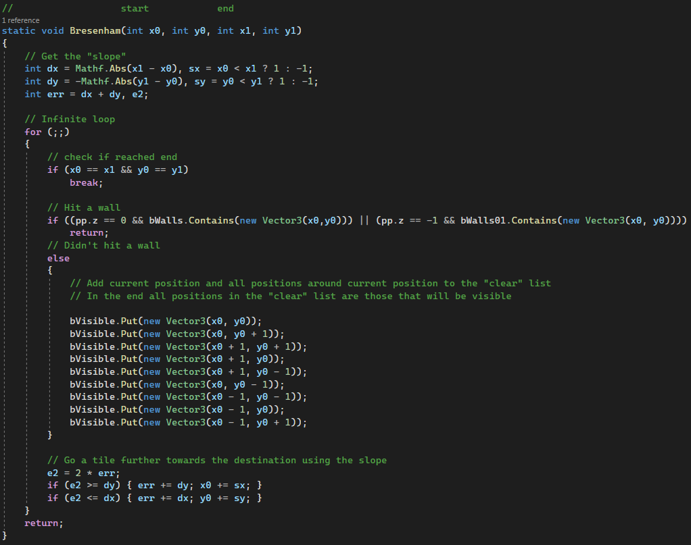
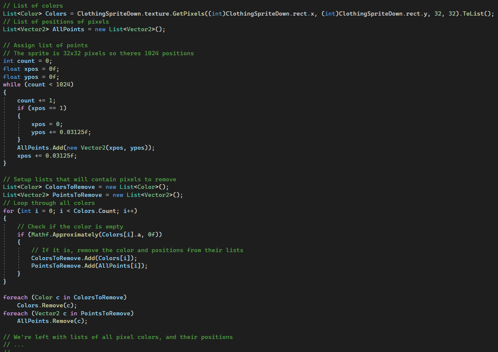
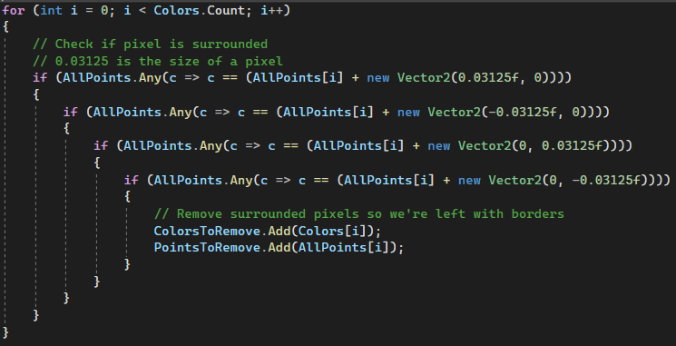
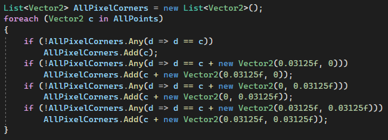
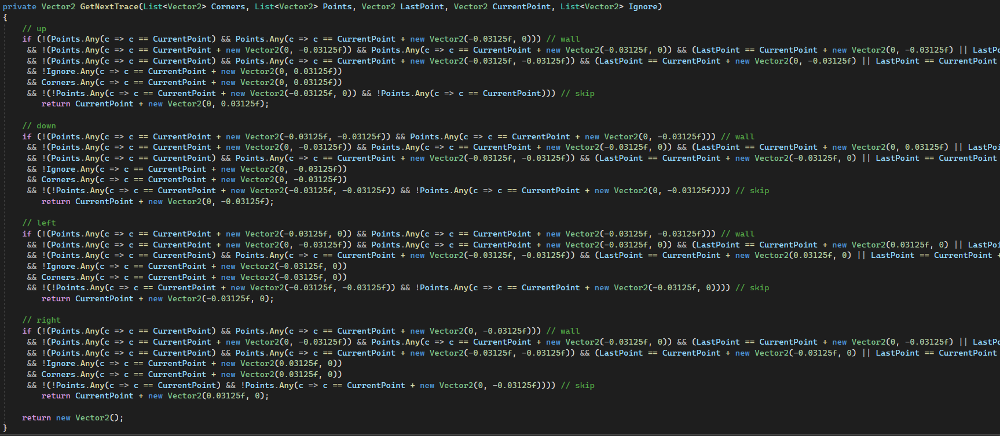

Anemia code examples
The LOS system
LOS stands for line of sight / fog of war, I made it tile-based which means that for each tile around you you either fully see it or you dont:

First, I got a perimiter of tile positions around the player by using 2 for loops. After that, I use my line-drawing-algorithm to "raycast" to those positions, this is the function:
I am using a line drawing function because it is designed to work with pixels, and thats appropriate for a tile-based system. The Bresenham line drawing algorithm is similar to the DDA line drawing algorithm but the difference is that this one only uses ints which makes it faster.
Here, BWalls and BVisible are a type I made for storing positions efficiently, its basically just a 2d array of bools. It looks like this:

After that I use a particle system to spawn 1x1 squares at every non-visible position, and clear them at the start of the next frame. Unity allows for multithreading in some cases, so I made the raycasting part async to get this all to run faster.
Sprite collider generation
So that I dont have to manually draw every items collider to fit its texture/sprite, I made a script that gets all of the pixels positions and creates a path for a polygon collider.
First, I read the sprite like this:
Next I remove all of the "inside" pixels, only leaving the border/outline of the sprite, by checking the list for any elements at neighboring positions.
A pixels position is its bottom left corner, but I need all of its corners for this, so I get those and switch to using a new list from now on.
Next I made a function that does a lot of comparisons to figure out the "path" from the first corner to the last corner that will be used for the collider. This functions starts at the first pixel and then continues to any available corner that is not blocked by other pixels, it also creates an "ignore" list so it doesnt visit any previously visited pixels. This is re-called until it returns the last corner and can't go any further.
Thats it, the only issue with this system is that it doesnt work where sprites have 1 pixel width diagonal lines (doesnt check for diagonal walls like that)
The generated path is given to a Unity polygon collider